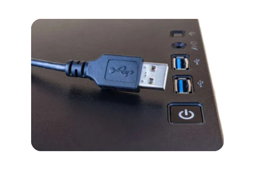

Les périphériques USB sont des équipements externes que l’on connecte à l’ordinateur à l’aide d’un port USB. Ils permettent d’interagir avec l’ordinateur, d’entrer des informations ou d’en recevoir, et parfois de stocker des données.
Fonctions principales
- Permettre l’entrée de données (clavier, souris)
- Permettre la sortie d’informations (imprimante, haut-parleurs)
- Connecter rapidement des appareils externes